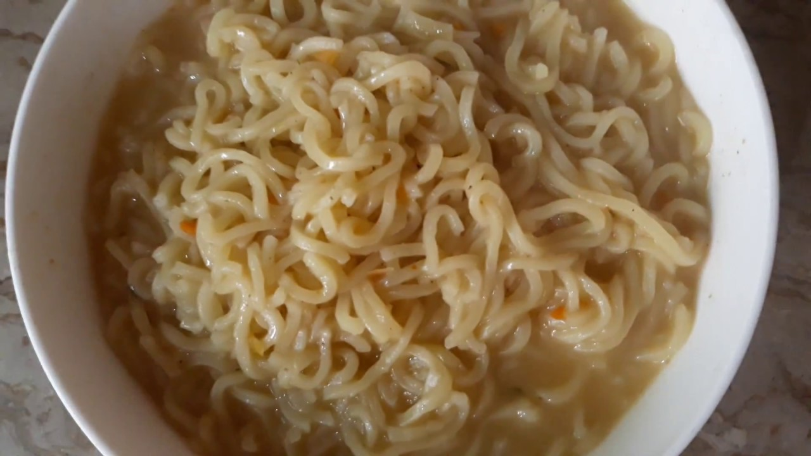

Me :)
Hobbies
- On a weekly basis I like to practice on my keyboard.
- I’ve become very skilled at skateboarding over quarantine.
How I spend my free time
- I really like music . Mostly songs that are unique, I don't usually listen to the songs they put on the radio.
My favourite genre is indie, in English and Hindi/Urdu.
- I watch Pakistani dramas serials with my mom and sister whenever I get time.
- We also bake as a family sometimes over the weekend.
- I try to keep in touch with my old friends over the weekend as I don’t get time over the week and time zones don’t help out either.
The time difference between Canada and India is 10 and a half hours and 10 with Pakistan (they are ahead of us).
- My family and I go out for ice cream! Our favourite ice cream place is Dutch Dreams in Vaughan!
- My favourite show is Avatar the Last Airbender! I’ve rewatched it more times than I could count!
- I try to catch up on my Urdu reading and writing whenever I get time.
- I like to look at memes to light up my day!
- My favourite thing to eat are Pakistani ramen noodles.
- I like going on walks during fall and exploring in mountainous areas.
- I like taking poems and have a little interest in photography

Validation links for page 3:
-